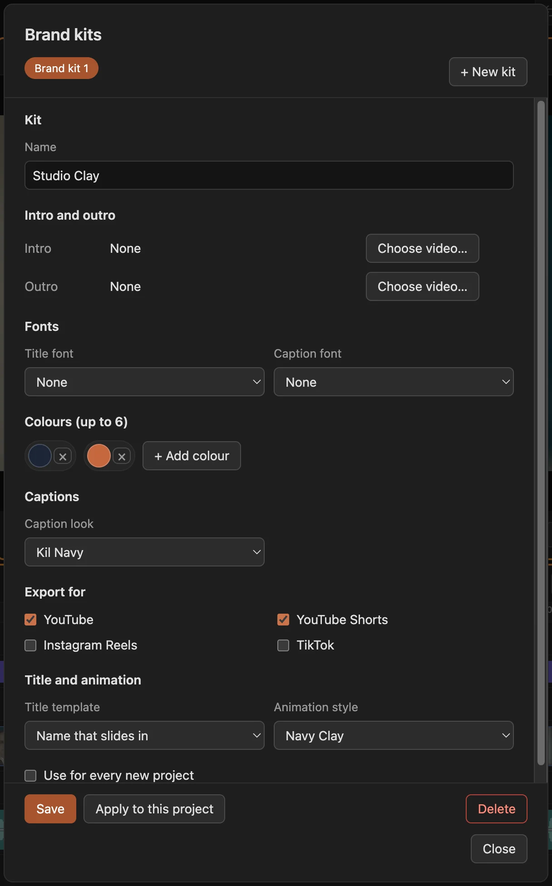

Brand kits and fonts
A brand kit keeps what every one of your videos shares: the intro and outro, colours, fonts, the caption look and the platforms you export for. Set it once, use it in every project.

Make a kit
Open File › Brand Kits… and press New kit. Give it a Name, then fill in what you need:
- Intro and outro: a video for each (Choose video…).
- Fonts: the Title font and the Caption font.
- Colours (up to 6).
- Captions: the Caption look.
- Title and animation: a Title template and an Animation style.
- Export for: the platforms you post to.
Press Save.
Use it
- Use for every new project makes it the default; the list marks it default.
- Apply to this project uses it in the open project.
Deleting a kit cannot be undone, but projects already made with it keep their look.
Your own fonts
Add Font…, in the Captions tab or the Text tab, adds a .ttf, .otf or .woff2 file of up to 20 MB. It shows under Your fonts. If a font has no Turkish letters (ğ, ş, ı…), Kilnframe tells you, and those letters show in another font.